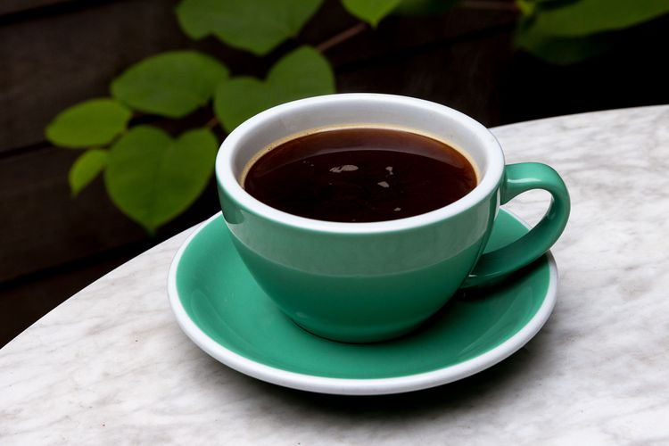

How to create the perfect Americano

Americanos may be the perfect coffee drink for espresso lovers:
get the rich, bold taste of espresso, with the volume of a pourover.
What is an Americano?
One of the most straightforward coffee
drinks you can make, an Americano is simply a shot of espresso (double
preferrably), diluted with hot water. It gets you all the benefits of
an espresso, but more of it!
Ingredients
- A suitable amount of coffee for your espresso
- hot water, 6-10 oz, based on preference
Recipe
Boil your water. I prefer to have my water ready before I
begin brewing my espresso. Pour your water into your cup, leaving room for
your espresso shot
Prepare your espresso. For the purposes of this guide, we will
leave that decision to the reader. My personal preference is a
double shot with a ~20-21g dose, targetting an extraction time of
40 seconds, with an output of approximately 25 grams
With your cup under the portafilter, begin brewing your espresso
Stop brewing when your target extraction time is reached. Ideally,
your drink will have some nice texture on top when it is done.
Let your drink cool appropriately and enjoy. Do not stir!
Return to main page